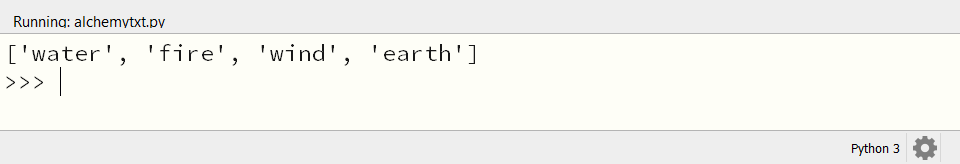
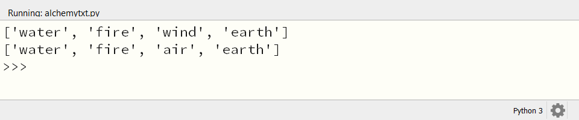
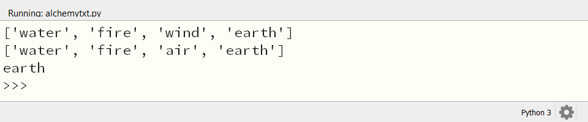

4.2. Lijsten#
Een list is een verzameling van waarden. Hieronder zie je een paar voorbeelden.
>>> powers_of_2 = [2, 4, 8, 16]
>>> random_floats = [10.0, 7.5, 3.33, 0.2]
>>> colors = ['rood', 'groen', 'blauw']
>>> mixed_bag = [1, 'oranje', 3.14, [5, 6, 7]]
Zoals je kunt zien, geven we in Python een list aan met vierkante haken. De waarden in de list worden gescheiden door komma’s. Een list kan verschillende datatypes bevatten, zoals strings, integers, floats en zelfs andere lists.
Opdracht 01
Maak in alchemytxt.py een list met de naam elements en vul deze met de vier elementen: 'water', 'fire', 'wind' en 'earth'. Print de list naar het scherm. Run het programma en vergelijk de uitvoer met de afbeelding hieronder.

4.2.1. Indices#
Een list is niet zomaar een verzameling, het is een geordende verzameling. Dat wil zeggen: de volgorde van de waarden in de list is belangrijk. Elke waarde in de list heeft een zogenoemde index. De index is een getal dat aangeeft op welke positie de waarde in de list staat. Let op: we tellen hierbij niet vanaf 1 maar vanaf 0! De eerste waarde in de list heeft dus index 0, de tweede waarde heeft index 1, enzovoort.
Index |
|
|
|
|
|---|---|---|---|---|
Waarde |
|
|
|
|
Met behulp van de index kun je een waarde uit een list opvragen:
>>> fruits = ['appel', 'banaan', 'citroen']
>>> fruits[1]
'banaan'
Of een waarde in een list veranderen:
>>> fruits = ['appel', 'banaan', 'citroen']
>>> fruits[1] = 'bosbes'
>>> fruits
['appel', 'bosbes', 'citroen']
Opdracht 02
Voeg twee regels aan je code in 'alchemytxt.py' toe, waarmee je het item 'wind' in de list elements verandert in 'air' en de list nogmaals naar het scherm print. Je mag de code die al in 'alchemytxt.py' stond niet veranderen; je mag alleen regels toevoegen. Zorg ervoor dat je de juiste index gebruikt!
Run het programma en vergelijk de uitvoer met de afbeelding hieronder.

4.2.2. Lengte van een list: len()#
Het komt vaak voor dat je wilt weten hoeveel waarden er in een list staan. Dat kan met de functie len(). Deze functie geeft het aantal waarden in de list terug.
>>> fruit = ['appel', 'banaan', 'citroen']
>>> len(fruit)
3
De functie len() stelt je tevens in staat om het laatste item in een list op te vragen:
>>> fruit = ['appel', 'banaan', 'citroen']
>>> fruit[len(fruit) - 1]
'citroen'
Merk op dat je hier len(fruits) - 1 als index moet gebruiken, omdat we bij 0 beginnen met tellen, waardoor de index van het laatste item in de list gelijk is aan de lengte van de list min 1.
Python biedt echter een snellere manier om het laatste item in een list op te vragen. Je kunt namelijk ook een negatieve index gebruiken. De index -1 verwijst naar het laatste item in de list, -2 naar het op één na laatste item, enzovoort.
>>> fruit = ['appel', 'banaan', 'citroen']
>>> fruit[-1]
'citroen'
>>> fruit[-2]
'banaan'
Opdracht 03
Voeg een regel toe aan je code in 'alchemytxt.py', waarmee je het laatste item in de list elements opvraagt en naar het scherm print. De uitvoer zou er zo moeten uitzien:

4.2.3. Items toevoegen en verwijderen#
Om een nieuwe waarde aan bestaande list toe te voegen, kun je de functie append() gebruiken. Deze functie is een methode van de list en daarom roep je hem aan met een punt achter de list naam:
>>> groenten = ['andijvie', 'broccoli', 'courgette']
>>> groenten.append('doperwt')
>>> groenten
['andijvie', 'broccoli', 'courgette', 'doperwt']
Een waarde uit een list verwijderen kan met de methode remove(). Deze functie verwijdert de eerste waarde die overeenkomt met de opgegeven waarde. Als je bijvoorbeeld de waarde 'broccoli' uit de list wilt verwijderen, doe je dat als volgt:
>>> groenten = ['andijvie', 'broccoli', 'courgette']
>>> groenten.remove('broccoli')
>>> groenten
['andijvie', 'courgette']
Wanneer je de index weet van de waarde die je wilt verwijderen, kun je de functie pop() gebruiken. Deze methode verwijdert de waarde op de opgegeven positie uit de list:
>>> groenten = ['andijvie', 'broccoli', 'courgette']
>>> groenten.pop(0)
>>> groenten
['broccoli', 'courgette']
De functie pop() geeft de verwijderde waarde ook terug. Dit kan handig zijn als je de verwijderde waarde nog even wilt gebruiken in je programma. Hier is een voorbeeld:
>>> groenten = ['andijvie', 'broccoli', 'courgette']
>>> verwijderde_waarde = groenten.pop(0)
>>> groenten
['broccoli', 'courgette']
>>> verwijderde_waarde
'andijvie'
Opdracht 04
Verwijder alle huidige code uit 'alchemytxt.py' en kopieer de onderstaande code naar het bestand.
1elements = [
2 'water',
3 'fire',
4 'wind',
5 'earth',
6 'steam',
7 'wave',
8 'plant',
9 'smoke'
10]
Zoals je ziet, kun je de inhoud van de list ook in meerdere regels schrijven. Dit is vooral handig bij lange lijsten.
Run de code en voer, terwijl het programma runt, in de CLI de volgende opdrachten uit:
Voeg het item
'lava'toe aanelements.Verwijder het item
'steam'uitelements.Voeg het item
'dust'toe aanelements.Verwijder het 5e item uit
elements(welke index hoort daarbij?).Print de list
elementsnaar het scherm.Print het aantal items in de list
elementsnaar het scherm.
Bekijk daarna het resultaat hieronder en vergelijk de uitvoer met die van jou.
Resultaat
Als je het goed hebt gedaan, zou de inhoud van het CLI venster er ongeveer zo uit moeten zien:
>>> elements.append('lava')
>>> elements.remove('steam')
>>> elements.append('dust')
>>> elements.pop(4)
'wave'
>>> print(elements)
['water', 'fire', 'wind', 'earth', 'plant', 'smoke', 'lava', 'dust']
>>> print(len(elements))
8
4.2.4. Alle items in een list langslopen#
Het langslopen van alle items in een list noemen we itereren. Dit kan op verschillende manieren. De meest gebruikelijke manier is met een for loop. Hier is een voorbeeld:
1kleuren = ['rood', 'groen', 'blauw']
2for kleur in kleuren:
3 print(kleur)
De uitvoer van dit programma is:
rood
groen
blauw
Soms wil je bij het itereren ook de index weten van het item dat je aan het verwerken bent. Dit kan met de functie enumerate():
1kleuren = ['rood', 'groen', 'blauw']
2for index, kleur in enumerate(kleuren):
3 print(index, kleur)
De uitvoer van dit programma is:
0 rood
1 groen
2 blauw
Opdracht 05
Verwijder weer alle code uit 'alchemytxt.py' en kopieer de onderstaande code naar het bestand.
1elements = [
2 'water',
3 'fire',
4 'wind',
5 'earth',
6 'steam',
7 'wave',
8 'plant',
9 'smoke'
10]
Voeg aan deze code een for loop toe, die alle elementen in de list elements afdrukt, samen met hun index in de vorm elements[index] = waarde. Gebruik hiervoor een f-string. De uitvoer zou er zo uit moeten zien:
elements[0] = water.
elements[1] = fire.
elements[2] = wind.
elements[3] = earth.
elements[4] = steam.
elements[5] = wave.
elements[6] = plant.
elements[7] = smoke.
Oplossing
1elements = [
2 'water',
3 'fire',
4 'wind',
5 'earth',
6 'steam',
7 'wave',
8 'plant',
9 'smoke'
10]
11
12for index, value in enumerate(elements):
13 print(f'elements[{index}] = {value}.')
4.2.5. List comprehensions#
Stel dat je een lijst wilt maken met de kwadraten van de getallen 1 tot en met 10. Dit kan met een for loop:
1kwadraten = []
2for n in range(1, 11):
3 kwadraten.append(n * n)
4print(kwadraten)
In regel 1 maken we een lege list aan met de naam kwadraten. In regel 2 gebruiken we een for loop om door de getallen 1 tot en met 10 te itereren. In regel 3 voegen we het kwadraat van elk getal toe aan de list kwadraten. Tot slot printen we de list naar het scherm. De uitvoer van dit programma is:
[1, 4, 9, 16, 25, 36, 49, 64, 81, 100]
Met een zogenoemde list comprehension kan dit echter sneller en eleganter:
1kwadraten = [n * n for n in range(1, 11)]
2print(kwadraten)
Met een list comprehension kun je in één regel een nieuwe list maken op basis van een bestaande list. De syntax is als volgt:
nieuwe_list = [<uitdrukking> for <item> in <bestaande_list>]
Misschien denk je nu, hoezo bestaande list? We hebben toch helemaal geen bestaande list gebruikt voor de kwadraten list? Klopt, maar we kunnen ook een range gebruiken als bestaande list. De volgende twee regels zijn dus gelijkwaardig:
kwadraten = [n * n for n in [0, 1, 2, 3]]
kwadraten = [n * n for n in range(4)]
List comprehensions zijn heel handig om snel lijsten te maken. Bijvoorbeeld, wanneer je een lijst met 100 nullen wilt maken:
nullen = [0 for n in range(100)]
Opdracht 06
Verwijder alle code uit 'alchemytxt.py' en kopieer de onderstaande code naar het bestand.
1even_getallen = ...
2print(even_getallen)
Vervang de puntjes in regel 1 door een list comprehension, die een lijst maakt met de even getallen van 0 tot en met 100.
Oplossing
even_getallen = [2 * n for n in range(51)]
4.2.6. Tweedimensionale lists#
Zoals gezegd kan een list andere lists bevatten:
>>> my_list = [['a', 'b', 'c'], ['d', 'e']]
>>> my_list[0]
['a', 'b', 'c']
>>> my_list[1]
['d', 'e']
Hoe zou je de waarde 'b' uit de list my_list kunnen ophalen? Het is het tweede item in de eerste list. Dus je moet eerst de eerste list opvragen en dan het tweede item uit die list:
>>> my_list[0][1]
'b'
Opdracht 07
Verwijder alle code uit 'alchemytxt.py' en kopieer de onderstaande code naar het bestand.
1tabel = [
2 ['a', 'b', 'c'],
3 ['d', 'e', 'f'],
4 ['g', 'h', 'i']
5]
Voeg een regel code toe waarmee je de waarde 'g' ophaalt uit de list tabel naar het scherm print.
Met een list comprehension kun je ook een lijst maken van lijsten. Dit noemen we een tweedimensionale list. Hier is een voorbeeld:
1tabel = [[n for n in range(1, 4)] for m in range(1, 7)]
2for row in tabel: print(row)
Regel 1 ziet er ingewikkeld uit hè? Laten we hem even ontleden. We maken een list met de naam tabel. Deze list bevat 6 lists, omdat we in de buitenste list comprehension for m in range(1, 7) gebruiken. De binnenste list comprehension maakt met n for n in range(1, 4) een lijst met de getallen 1 tot en met 3. Dit gebeurt 6 keer, omdat we in de buitenste list comprehension 6 keer itereren. De for loop in regel 2 print elke rij van de tabel naar het scherm.
De uitvoer van dit programma is:
[1, 2, 3]
[1, 2, 3]
[1, 2, 3]
[1, 2, 3]
[1, 2, 3]
[1, 2, 3]
Als je alles wat hierboven staat hebt begrepen, ben je klaar om met de tekstversie van het spel beginnen. Zijn er dingen die je nog niet helemaal snapt? Lees de uitleg dan nog eens door en experimenteer zelf met lists in Mu Editor.